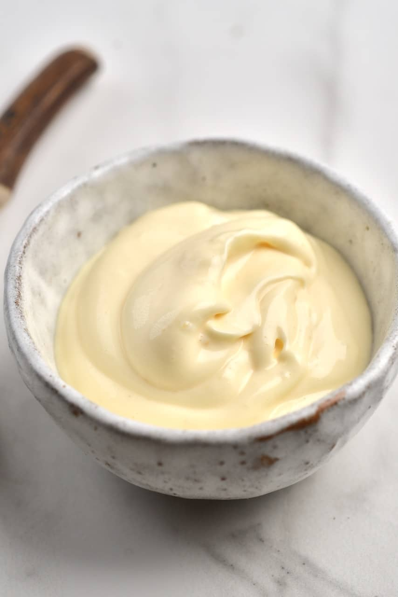

Mayonnaise Recipe

Low carb condiments are some of the hardest to find, particularly if you care about natural ingredients and want something affordable. That’s why I often make my own! This easy keto paleo mayo recipe with avocado oil is a staple at our house. It literally takes just a few minutes, using common ingredients. And unlike many homemade mayonnaise recipes, this one has almost no cleanup at all!
Ingredients
- 1 Large Egg
- 1 tsp Dijon Mustard
- 2 tsp Apple Cider Vinegar
- 1/4 tsp Sea Salt
- 1 cup Avocado Oil
Steps
- Crack the egg into the bottom of a tall, wide mouth glass jar. (You can also use a tall glass, but make sure it's wide enough for an immersion blender to fit. Do not use a bowl.)
- Add the Dijon mustard, vinegar, and salt on top of the egg, trying not to disturb the egg. Do not whisk or stir.
- Pour the oil on top. Again, do not whisk or stir.
- Carefully submerge an immersion blender into the bottom of the jar, so that it's right where the egg is. Blend on low power for about 20 seconds without moving, until you see most of the jar has turned white. Then, slowly start to move the blender upward, without lifting the blender out into the air. Once you reach the top of the oil, slowly move back down to the bottom. Go up and down like this a few times, until mayonnaise forms.
- Store the homemade paleo mayonnaise right in the jar, in the refrigerator.